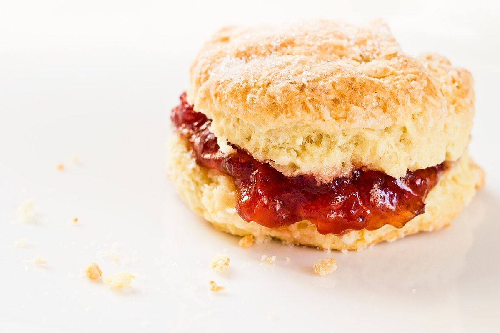
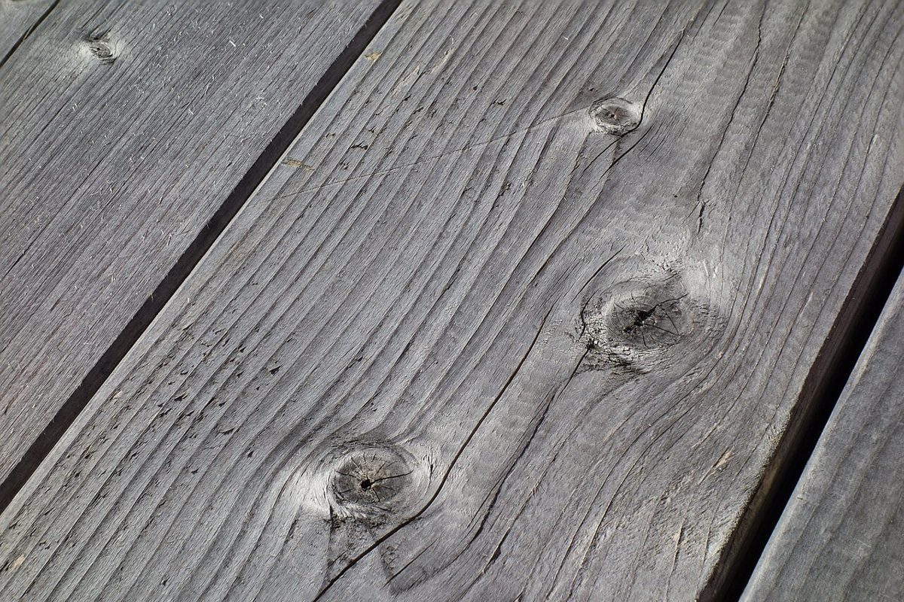

焼き菓子のお店 / 高知県香南市
tuctuc
子どもの口からこぼれた「トゥクトゥク」の響きを、そのまま屋号に。自分たちが食べたいと思うお菓子を、ひとつずつ並べるお店です。
Instagramを見る 営業日は準備中

写真: Lemon Scone with Jam (6849605425) / Benson Kua / CC BY-SA 2.0 / 撮影地不明お店のこと
確認できたことだけをご紹介します。
店名のはじまり
お店の名前を考えていたとき、オーナーのお子さんが何気なく口にした言葉が「トゥクトゥク」と聞こえ、「かわいい」と感じてそのまま屋号にした、と地元メディアの取材記事で紹介されています。
お店の名前を考えていたとき、オーナーのお子さんが何気なく口にした言葉が「トゥクトゥク」と聞こえ、「かわいい」と感じてそのまま屋号にした、と地元メディアの取材記事で紹介されています。
お菓子への想い
「自分たちが食べたいお菓子」がコンセプト。並ぶのは「私たちが食べたいと思ったものばかり」で、たくさんの人にバラエティ豊かな焼き菓子を届けたい、という思いで続けているそうです。
「自分たちが食べたいお菓子」がコンセプト。並ぶのは「私たちが食べたいと思ったものばかり」で、たくさんの人にバラエティ豊かな焼き菓子を届けたい、という思いで続けているそうです。
お店の様子
赤い屋根の洋館風の外観が目印。店内はカウンター席のみで、一組ずつ入る形と紹介されています。県内のイベントへの出店もあります。
赤い屋根の洋館風の外観が目印。店内はカウンター席のみで、一組ずつ入る形と紹介されています。県内のイベントへの出店もあります。
店名の「意味」そのものは、取材記事にも記載がありません。営業日は時期により変わるため、お出かけ前にInstagramでご確認ください。

写真: Weatherworn top of wooden table / W.carter / CC0 1.0 / スウェーデン

お菓子のラインナップ
取材記事などで紹介された品目です。内容は時期で変わります。価格・提供日は準備中
スコーン
種類豊富で季節の味も。取材記事で紹介されています。
写真: Lemon Scone with Jam (6849605425) / Benson Kua / CC BY-SA 2.0 / 撮影地不明

りんごを使ったお菓子
丸ごとのりんごを使うキャンディアップルが紹介されています(写真はりんごのバターのイメージ)。
写真: Toasted oatmeal bread with butter and apple butter - Massachusetts / Daderot / CC0 1.0 / 撮影地不明
生ショコラブラウニー
冬の定番として紹介された品目です。
写真: Chocolate-dessert-brownies-cake (23698710074) / www.Pixel.la Free Stock Photos / CC0 1.0 / 撮影地不明
旬の果実のお菓子
旬のフルーツを使った品が並ぶと紹介されています。
写真: Strawberry crumble dessert partially eaten Easter Sunday 2025 / Eastmain / CC0 1.0 / カナダ(座標記載による)
ケーキ・タルト
シフォンケーキやタルトなども紹介されています(写真はイメージ)。
写真: Chocolate raspberry dessert / Funknendai / CC0 1.0 / 撮影地不明夏季限定でかき氷も紹介されています。そのほか、マカロンや冬季のシュトーレンなどが並ぶ時期もあるそうです。


口コミ
以下は制作側が作成した創作のイメージ例で、実在のお客様の声ではありません。
イメージ例
焼き菓子が並ぶ小さなお店という話を聞いて、いつか立ち寄ってみたいと思っています。
イメージ例
「トゥクトゥク」という名前の響きがかわいくて、つい覚えてしまいました。
イメージ例
営業日が気になるので、まずはInstagramをのぞいてから訪ねてみたいです。